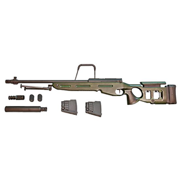
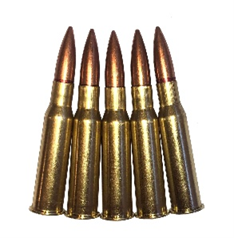

Die SV-98 im Kaliber 7.62x54R wurde in den späten 90ern entwickelt und ist bis heute aktiv im Dienst in der russischen Armee. Anders als die Remington 700 ist die SV-98 hauptsächlich für die russischen Streitkräfte verfügbar.
Technisch ist das Interessante an der SV-98, dass sie genau dort zielt, wo viele russische Systeme zuvor Kompromisse eingingen: auf Präzision mit Diensttauglichkeit. Gewichtsaussenmessungen und offene Quellen nennen Leergewichte im Bereich von etwa 5,8 Kilogramm für die Basisversion, bei manchen aktualisierten Modellen oder komplett ausgerüsteten Kampfsets wird ein Einsatzgewicht um 7,8 Kilogramm angegeben. Gesamtlänge liegt typischerweise bei ungefähr 1200 Millimetern, der Lauf misst etwa 650 Millimeter. Diese Werte sorgen für eine ballistisch stabile Kombination mit den in Russland verbreiteten 7,62×54R Patronen.
Ballistik und Munition
Zum Herzstück, der Munition und Ballistik: die SV-98 wurde standardmässig für die 7,62×54R Patrone konzipiert. Mit passender Gewehrmunition, etwa den 7N1 oder den 7N14 Typen, liegen typische Mündungsgeschwindigkeiten im Bereich um 820 bis 830 Meter pro Sekunde, was in Kombination mit Geschossgewichten von grob 145 bis 150 Grain Mündungsenergien im Bereich mehrerer tausend Joule ergibt. In der Praxis erlaubt diese Kombination Reichweiten, bei denen ein trainierter Schütze auf 800 bis 1000 Meter noch effektive Treffer realisieren kann, wobei die reale Einsatzdistanz immer vom Zieltyp, Optik, Wind und Munition abhängt. So ist die SV-98 ideal für taktische Einsätze wo Reichweite und Durchschlagskraft eine Rolle spielen.
Abschliessend mein Eindruck: die SV-98 ist keine Designikone, die jeder kennt, aber für denjenigen, der Wert auf eine sauber durchdachte Bolt Action legt, ist sie ein echter Charakter: solide, zweckorientiert und anpassungsfähig. Für Jäger oder Sportschützen mag es modernere, leichtere oder bequemere Alternativen geben. Für militärische oder polizeiliche Scharfschützenzwecke aber hat die SV-98 ihren Platz verdient, weil sie dort liefert, wo es drauf ankommt: Reichweite, Durchschlagskraft und Wiederholgenauigkeit. Wenn du eine Dokumentation bauen willst, dann sind die technischen Eckdaten, Variantenangaben und originale Herstellerangaben gute Ausgangspunkte für Tabellen und Vergleichslisten.